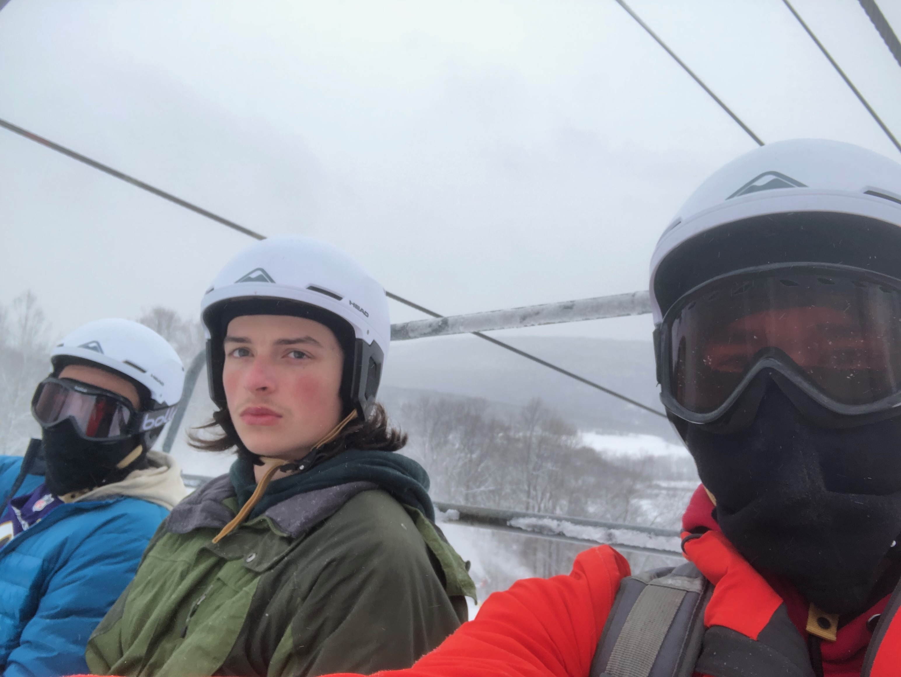
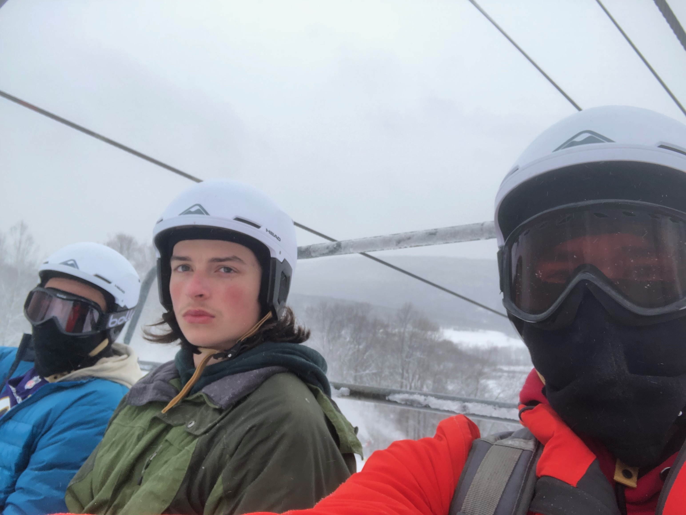

As I write this right now, I am not in a great mood. I have slept very little over the last two days, and that has caused me to have difficulties in several areas of my life. I am struggling to focus in class, I just missed a discussion section for my math class because I took a nap, and I don’t have the desire to socialize like I normally would. But despite this, I have so much to be grateful for. In fact, the things that I have to be grateful for far outweigh the few negative things I can identify, even if I tried my hardest to seek the negative. So often we choose to selectively focus on the negative things in our lives and that leads us to develop a negative perception of ourselves as a whole. But, for the vast majority of us, the positives far outweigh the negatives. To prove this, I will make a list of all of the things I have to be grateful for.
- My Family
- My friends
- Jesus Christ
- The Bible
- My residence hall (which happens to be the nicest on campus)
- My college education
- My intelligence
- My family’s wealth and my comfortable childhood
- My exposure to people of many backgrounds, ethnicities, and interests, both in my upbringing and currently at the University of Maryland
- OneU, the Christian group on campus I am a part of
- Air conditioning and heat
- The libraries
- The knowledge that I have
- The dining halls
- The sky
- The seasons of the year (I really appreciate that I live in a state that has all four)
- Animals
- Dogs
- Blue Jays
- Humpback Whales
- Tree Frogs
- Kangaroos
- Koalas
- Penguins
- Puffins
- Zebras
- Plants
- Trees
- Grasses
- Ferns
- Algae
- Phytoplankton
- Today
- Yesterday
- Last month
- Last year
- My good health
- My athletic abilities
- Intramural sports and access to a gym just a block away
- Freedom (without responsibility)
 

I could keep on going. Probably forever. But If I tried to point out all the negative aspects of my life, I would quickly run out of ideas. And so, what’s the point in focusing on the negatives? If I had a bad night of sleep, so what? I still have 100 things to be grateful for. If I missed a day at the gym, so what? I still have a loving father in heaven. One who became a human being and was nailed to a cross. One who forgave me of all my sins and offers me eternal life in heaven. Nothing I will ever experience on this earth, none of my suffering, pain, or reasons to complain compares even fractionally to the pain that Jesus felt on that cross and he deserved none of it. He endured the full wrath of God, so that I may live this life worry-free, complaint-free, and with the freedom and joy that my sins are no longer seen by God. I have so many reasons to be grateful that I ought to be joyful every minute of every day.
“Rejoice in the Lord always. I will say it again: Rejoice!” - Philippians 4:4 NIV